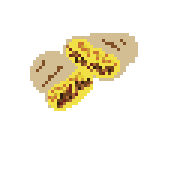

Breakfast Burrito

This is a breakfast burrito I have been making for a long time. Very easy to make
with few ingredients.
Ingredients (serves 5 people)
- 15 eggs
- 5 tortillas
- 3/4 of a frozen bag of your choice of potatoes
- 1 pack of preferred bacon
- 1 pack of preferred sausage
- 1/2 lb of medium cheddar
- Devin's Dank Salsa
Steps
- Shred cheese and put in fridge
- Put forzen potatoes in air fryer using instrucitons on bag
- Chop bacon and sausage into 1/2 inch pieces or smaller
- Throw bacon and sausage into skillet and cook all the way through.
I like to cook bacon first then sausage.
- While meats are cooking, I like to crack all of the eggs in a bowl to
prepare for scrambling.
- Remove bacon and sausage and set inside oven or microwave so it keeps warm
- Remove some of the grease, but leave some for the eggs
- Add bowl of scrambled eggs and cook to your desired doneness or fully scrambled
- Heat up tortillas until soft and warm
- Place one tortilla on a plate and assemble the burrito using all ingredients prepared
- Repeat for other 4 burritos